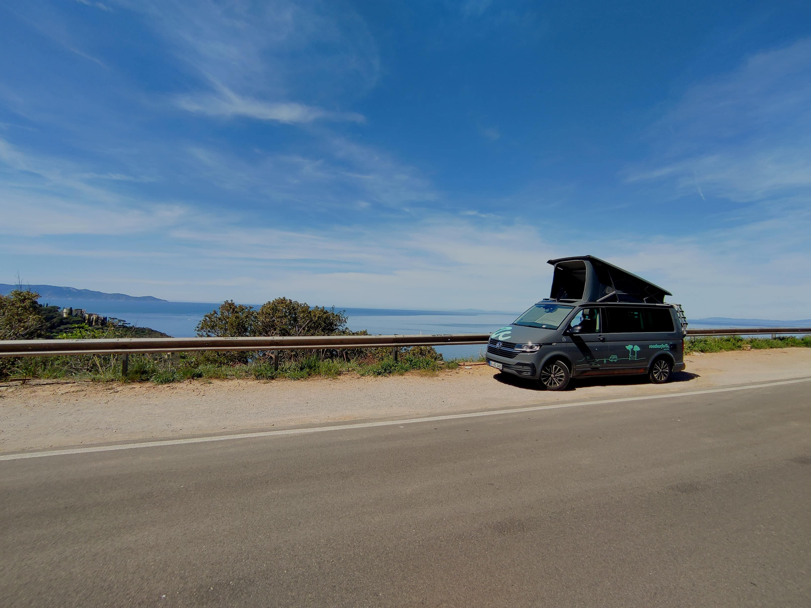

Ingegneria e Scienze Informatiche
Laurea triennale all’Università di Bologna.
UNIBOSIMONE REGA · CLASSE 2000
Programmazione, sport e viaggi.
Tre passioni, il mio modo di essere.

01 / CHI SONO
Laurea triennale all’Università di Bologna.
UNIBONel settore della programmazione.
SVILUPPO SOFTWAREGioco nel campionato Libertas con la squadra CUSB Bologna di Rimini.
PALLAVOLO02 / I MIEI SPAZI
03 / IL MIO ATLANTE
Amo viaggiare.
Queste sono le mie coordinate.